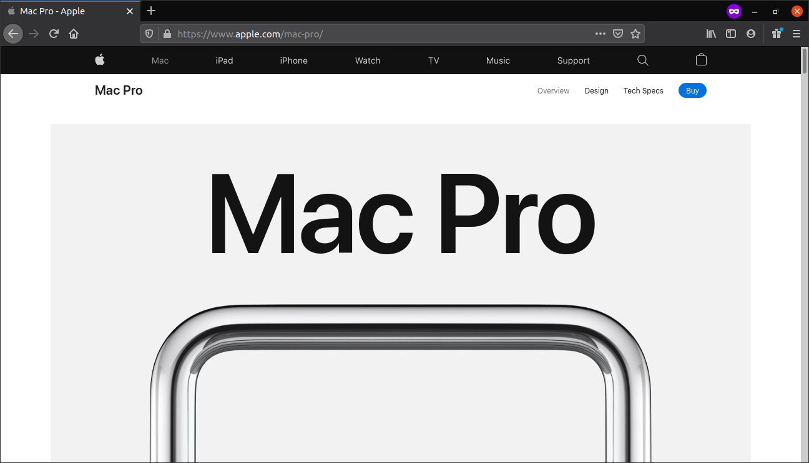
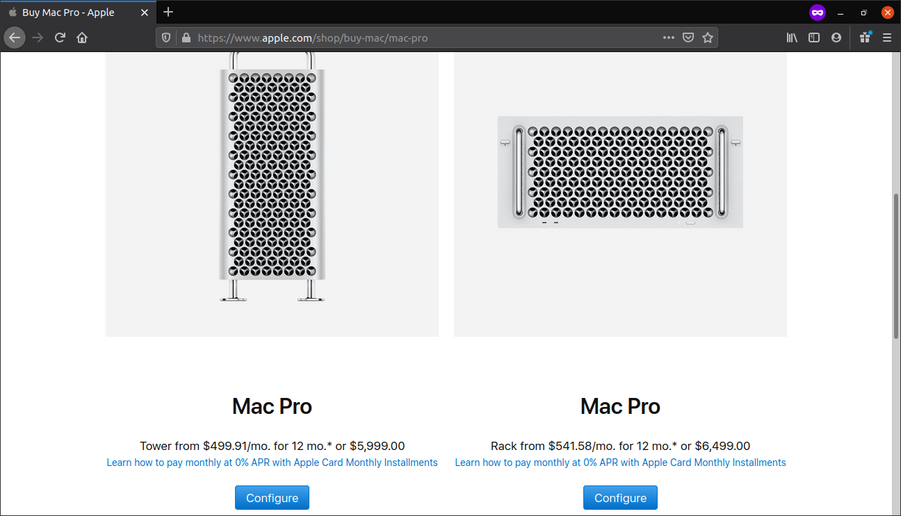
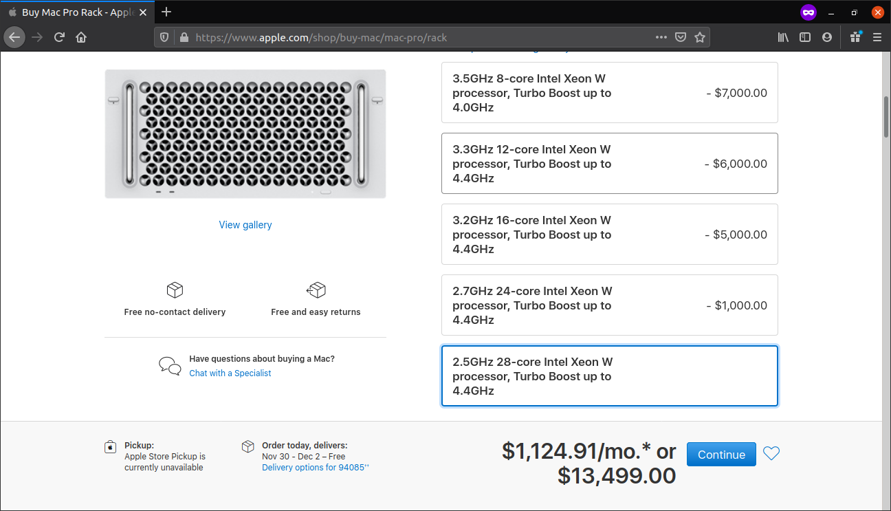
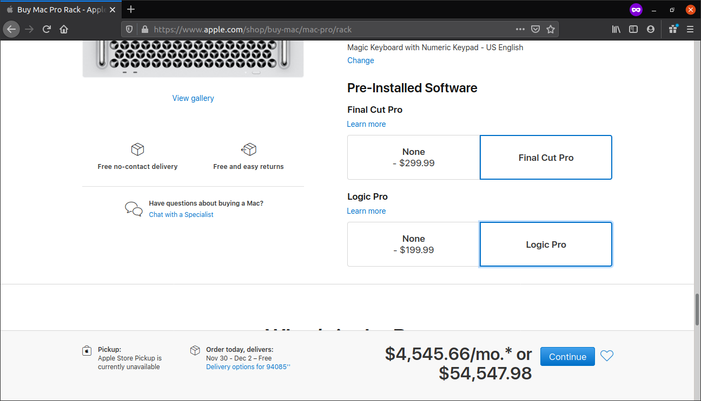
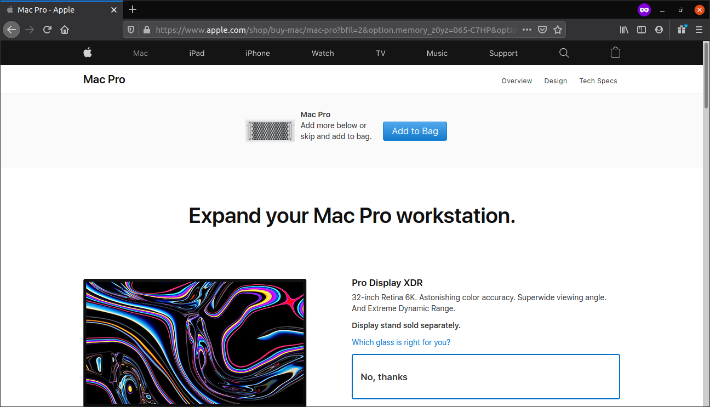
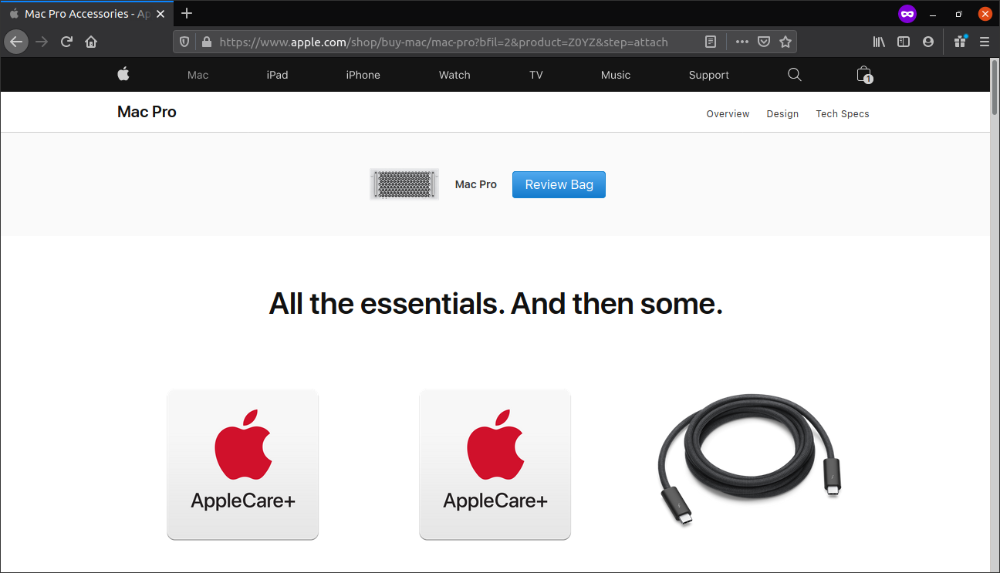
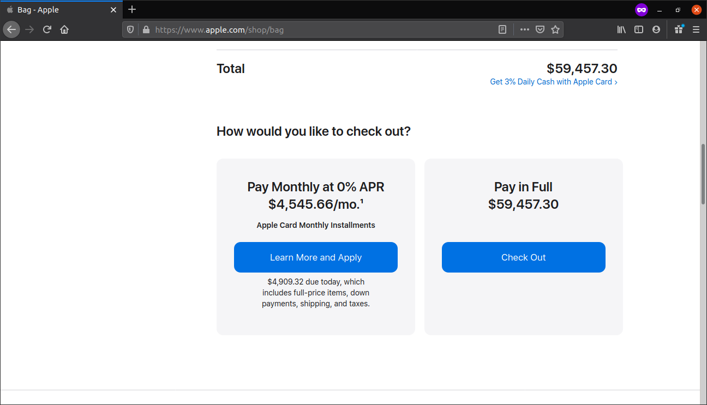

Go to apple.com.
Click on "Mac" in the top bar, then click on "Mac Pro." Then, click on "Buy" on the top right.
Click the blue "Configure" button on the bottom right, not the left one. The left one is for noobs and is not epic and affordable.
Click on the bottom option in each category. This will ensure the most epic and affordable computer.
Make sure to include the pre-installed software to make it even epicer. Then, click continue.
Apple will show you some things that no one cares about. You can buy them if you want, but no one cares. Just click "Add to bag."
Apple will try to make you buy even more things that no one cares about. Just click "Review bag."
Scroll down and click the "Check out" option on the right. This is the most epic way to buy your epic and affordable mac. Congratulations, now you will have your very own epic affordable mac.